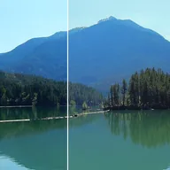

ہائی لائٹس اور شیڈوز

ہر پکسل کی چمک کے مطابق روشن ہائی لائٹس بحال یا بڑھاتا ہے اور گہرے شیڈوز اٹھاتا یا گہرا کرتا ہے۔
سیٹنگز
| سیٹنگ | قسم | رینج | ڈیفالٹ |
|---|---|---|---|
| ہائی لائٹس | نمبر | 0 سے 2 تک | 1 |
| شیڈوز | نمبر | 0 سے 2 تک | 1 |
| اسٹائل | انتخاب | کلاسک, رنگ رکھیں | کلاسک |

ہر پکسل کی چمک کے مطابق روشن ہائی لائٹس بحال یا بڑھاتا ہے اور گہرے شیڈوز اٹھاتا یا گہرا کرتا ہے۔
| سیٹنگ | قسم | رینج | ڈیفالٹ |
|---|---|---|---|
| ہائی لائٹس | نمبر | 0 سے 2 تک | 1 |
| شیڈوز | نمبر | 0 سے 2 تک | 1 |
| اسٹائل | انتخاب | کلاسک, رنگ رکھیں | کلاسک |